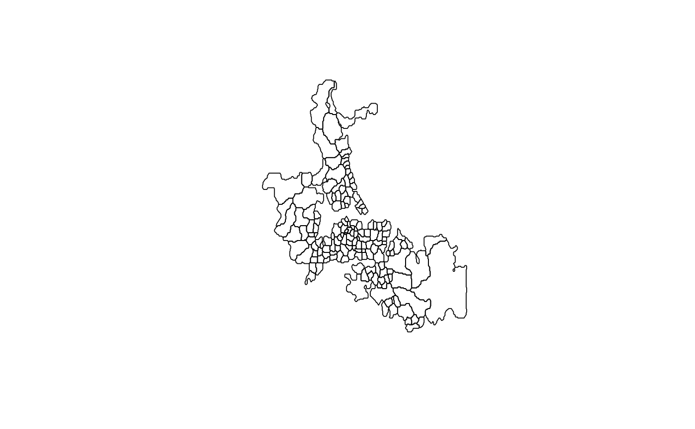

(Use example(auckland) to load the data from shapefile and generate neighbour list on the fly). The auckland data frame has 167 rows (census area units --- CAU) and 4 columns. The dataset also includes the "nb" object auckland.nb of neighbour relations based on contiguity, and the "polylist" object auckpolys of polygon boundaries for the CAU. The auckland data frame includes the following columns:
This data frame contains the following columns:
Easting a numeric vector of x coordinates in an unknown spatial reference system
Northing a numeric vector of y coordinates in an unknown spatial reference system
M77_85 a numeric vector of counts of infant (under 5 years of age) deaths in Auckland, 1977-1985
Und5_81 a numeric vector of population under 5 years of age at the 1981 Census
Marshall R M (1991) Mapping disease and mortality rates using Empirical Bayes Estimators, Applied Statistics, 40, 283--294; Bailey T, Gatrell A (1995) Interactive Spatial Data Analysis, Harlow: Longman --- INFOMAP data set used with permission.
The contiguous neighbours object does not completely replicate results in the sources, and was reconstructed from auckpolys; examination of figures in the sources suggests that there are differences in detail, although probably not in substance.
library(rgdal)#> #> #> #> #> #> #>#> OGR data source with driver: ESRI Shapefile #> Source: "/home/jn/Documents/spData/inst/shapes/auckland.shp", layer: "auckland" #> with 167 features #> It has 4 fieldsplot(auckland)